Misión
Ofrecer soluciones de mantenimiento, reparación y recuperación de equipos críticos con atención oportuna, respaldo técnico, seguridad operativa y garantía en cada servicio.
A su servicio desde 2005
Mantenimiento, reparación y fabricación para maquinaria pesada, equipos de apoyo aeronáutico y sistemas eléctricos industriales.
Quiénes somos
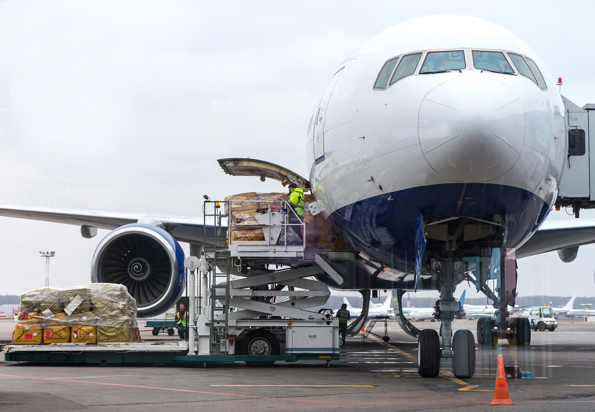
Somos una empresa colombiana dedicada al mantenimiento preventivo, correctivo y recuperativo de equipos críticos.
Nuestro compromiso es dejar cada equipo en funcionamiento, conservando altos estándares de calidad y confiabilidad. Contamos con asistencia técnica preparada para entregar soluciones efectivas, desde el diagnóstico hasta la puesta en marcha.
Ofrecer soluciones de mantenimiento, reparación y recuperación de equipos críticos con atención oportuna, respaldo técnico, seguridad operativa y garantía en cada servicio.
Ser un referente nacional en mantenimiento técnico, fabricación especializada y comercialización de repuestos, acompañando a nuestros clientes con confiabilidad y mejora continua.
No existe una manera fácil ni rápida de hacer lo nuestro.
Líneas de negocio
En Motores Baks S.A.S. brindamos soporte técnico, mantenimiento y soluciones industriales para equipos terrestres de apoyo, maquinaria pesada y sistemas eléctricos industriales, acompañando operaciones que requieren disponibilidad, seguridad y respuesta oportuna.
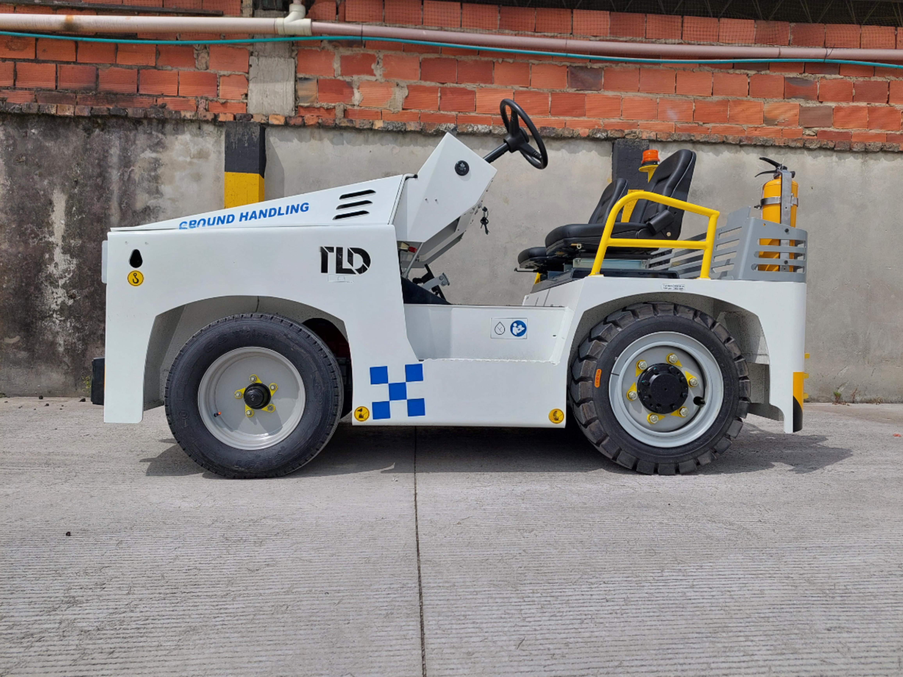
Sector aeronáutico
Soporte técnico para equipos GSE utilizados en operación aeroportuaria.
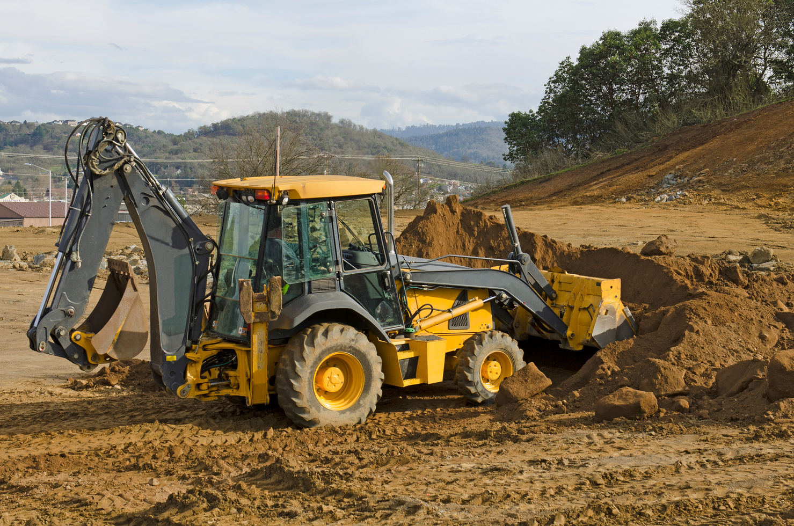
Minería, agro y construcción
Mantenimiento y soporte para equipos utilizados en minería, agro y construcción.
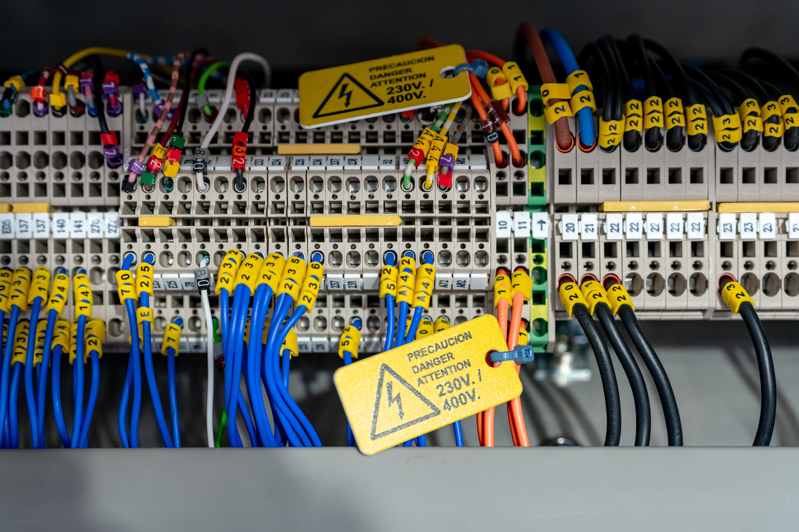
Industria y automatización
Soluciones eléctricas para operación, control y confiabilidad de sistemas industriales.
Cuéntenos qué equipo necesita revisar y nuestro equipo le orientará con una solución oportuna y confiable.
Más de 10 años de experiencia en mantenimiento industrial.
Personal técnico calificado y en constante capacitación.
Equipos y herramientas de alta calidad.
Atención rápida y soporte continuo.
Compromiso con la seguridad, la calidad y la confiabilidad.
Portafolio de servicios
Equipo terrestre de apoyo aeronáutico
En Motores Baks S.A.S. conocemos el papel vital que desarrolla el equipo ETAA en la industria aeronáutica. Por esta razón contamos con personal exclusivo, altamente capacitado y calificado con el propósito de desarrollar la importante tarea de gestionar el mantenimiento y el diseño del equipo terrestre de apoyo aeronáutico para nuestros clientes.
Minería, agro y construcción
En Motores Baks S.A.S. somos conscientes del papel vital que desarrolla la maquinaria pesada en sectores fundamentales como el minero, el agro y la construcción. Por ello, contamos con un equipo exclusivo de profesionales altamente capacitados y calificados para gestionar y realizar el mantenimiento a los diversos equipos de nuestros clientes.
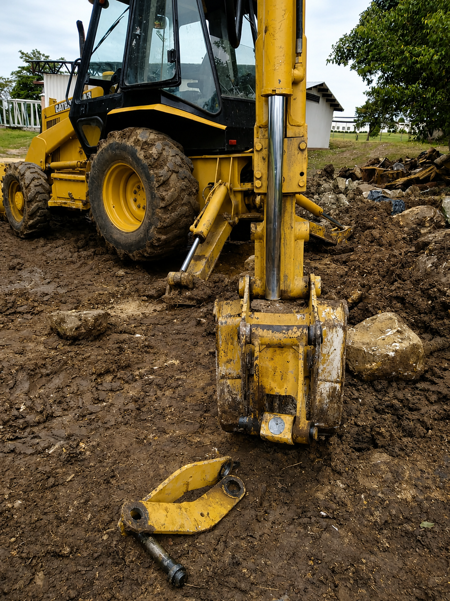
Control, revisión y disponibilidad
En Motores Baks S.A.S. una de las tareas fundamentales es el mantenimiento para el equipo terrestre de apoyo aeronáutico; es la ejecución de tareas preventivas y de control donde, con base en un control de horas de trabajo, se deben realizar revisiones, ajustes, análisis, diagnósticos, lubricación, calibración y cambio de piezas, entre otros, para que así el equipo sea más eficiente realizando su trabajo, reduciendo costos gracias a una detección y un tratamiento oportuno de futuras fallas, disminuyendo la posibilidad de mantenimientos correctivos o reactivos que generen un costo elevado y paros imprevistos en la productividad del equipo.
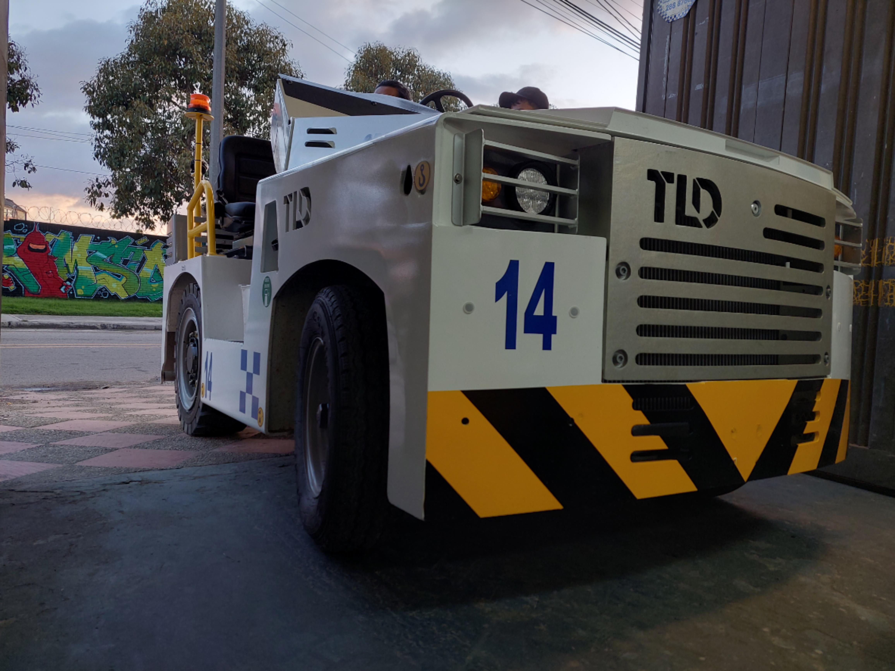
Maquinaria pesada
Realizamos mantenimiento preventivo para maquinaria pesada mediante inspecciones técnicas, revisión de sistemas hidráulicos, mecánicos y eléctricos, ajustes operativos y control de desgaste, con el objetivo de reducir fallas, proteger la productividad y mantener los equipos disponibles en campo.
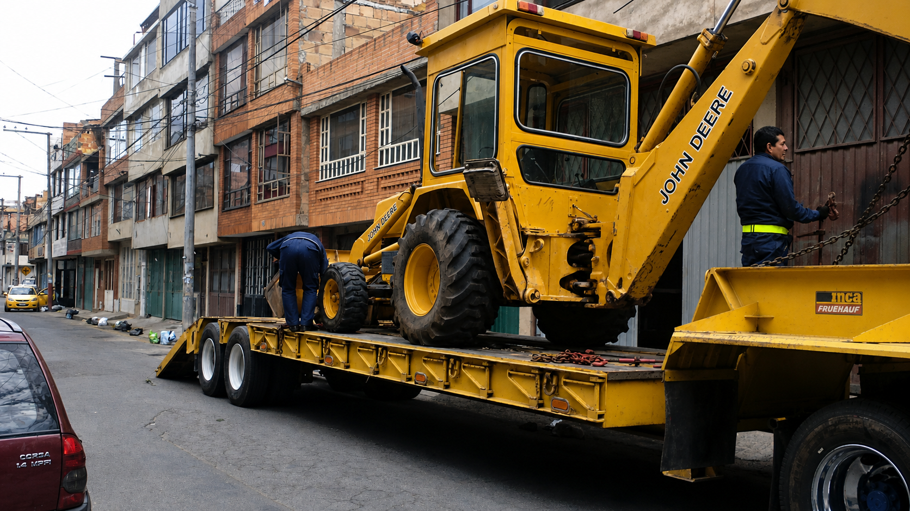
Respuesta ante fallas no programadas
En Motores Baks S.A.S. tenemos una reacción inmediata cuando aparecen mantenimientos correctivos o no programados que pueden generar paros imprevistos en los equipos. Gestionamos análisis y un diagnóstico rápido y preciso de la falla y, de esa forma, corregimos y devolvemos la productividad al equipo realizando análisis, diagnóstico, cambio y/o fabricación de la pieza, calibración y limpieza, entre otros procesos, para cumplir sus expectativas y requerimientos en su totalidad, porque su satisfacción es nuestro compromiso.
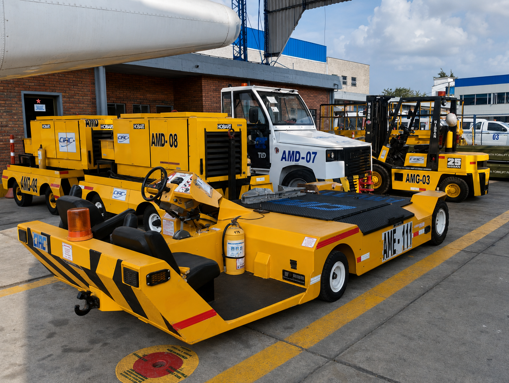
Maquinaria pesada
Atendemos fallas no programadas en maquinaria pesada con diagnóstico técnico, corrección de componentes, revisión de sistemas hidráulicos, mecánicos y eléctricos, y pruebas de funcionamiento para recuperar la productividad del equipo en el menor tiempo posible.
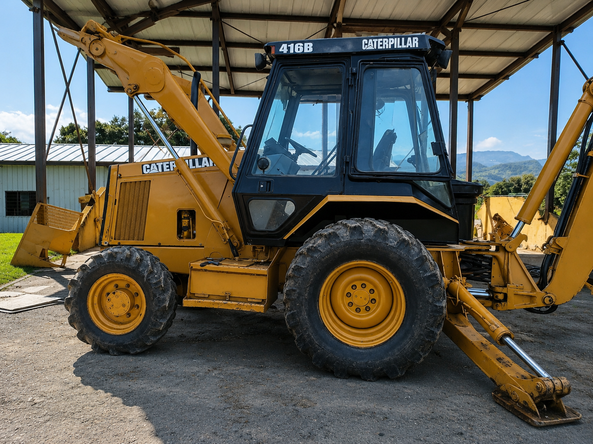
Restauración, recuperación y overhaul
En Motores Baks S.A.S. tenemos una vasta experiencia en la restauración, recuperación y overhaul de todos los equipos: tractores, convellers, paymovers, montacargas, dollys, carros maleteros, plantas eléctricas y cargadores; realizando un análisis y trazando una hoja de ruta para cumplir con la restauración de manera eficiente, optimizando tiempo y calidad.
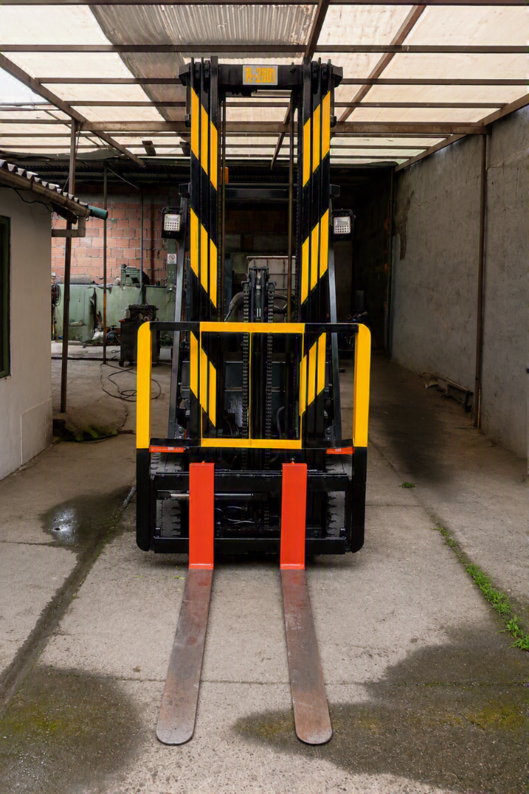
Gasolina y diésel
En Motores Baks S.A.S. somos especialistas en la reparación de motores a gasolina y diésel, ya sean reparaciones parciales o completas, dependiendo de lo que nuestro equipo de especialistas considere mejor. Tenemos experiencia con todo tipo de marcas: Perkins, Deutz, Detroit, Ford, Toyota y Cummins, entre otras; contamos con herramientas y personal idóneo de alta calidad para realizar un trabajo confiable mediante una hoja de ruta para una correcta reparación y gestión del tiempo con refacciones originales y de alta calidad.
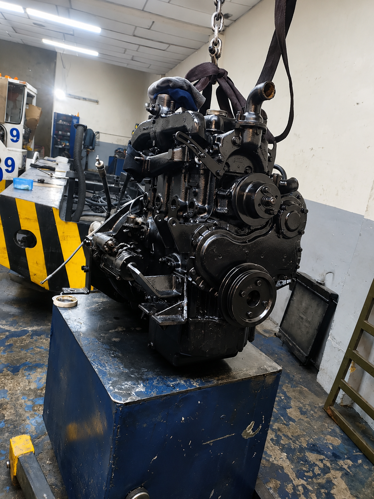
Sistemas de potencia
En Motores Baks S.A.S. contamos con personal altamente calificado en cada sistema que compone un equipo. Nosotros contamos con una amplia experiencia en la reparación de cajas automáticas; además, contamos con aliados y con un amplio suministro de repuestos para las mismas.
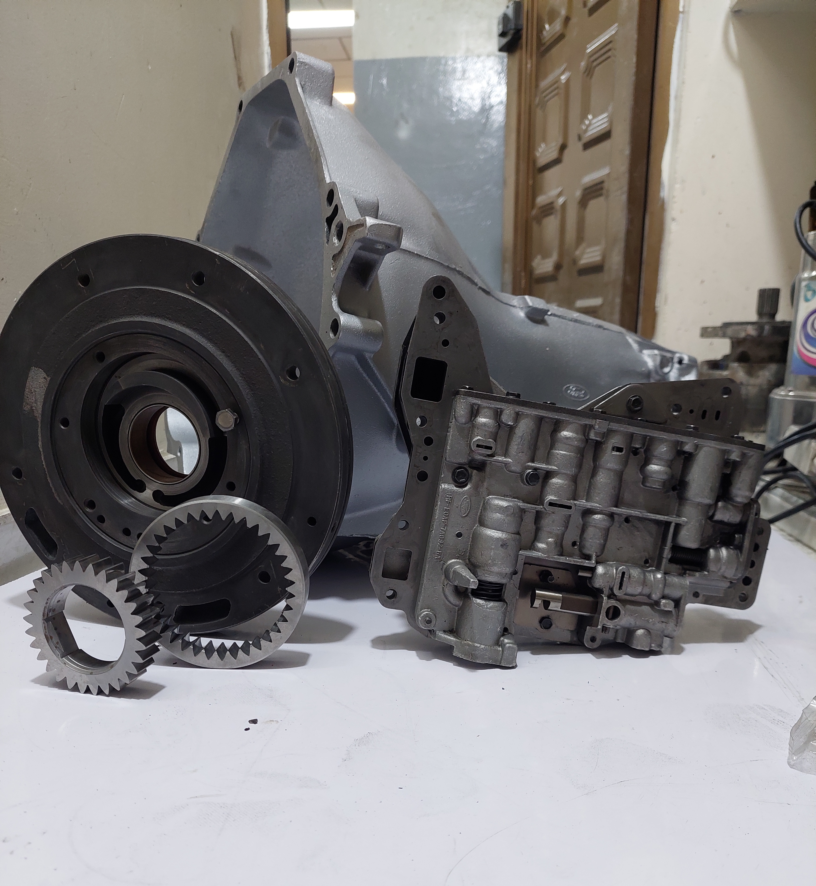
Reparación y fabricación
En Motores Baks S.A.S. una de nuestras especialidades es la reparación y fabricación de sistemas hidráulicos, cilindros hidráulicos, suspensiones hidráulicas, direcciones hidráulicas y bombas hidráulicas, entre otros sistemas. Contamos con el mejor equipo técnico, herramientas y materia prima para la fabricación y reparación de estos sistemas, a través de análisis, ajustes, cambio de empaquetaduras y empalmes, con el departamento de ingeniería para el diseño de estos sistemas y su correcto funcionamiento.
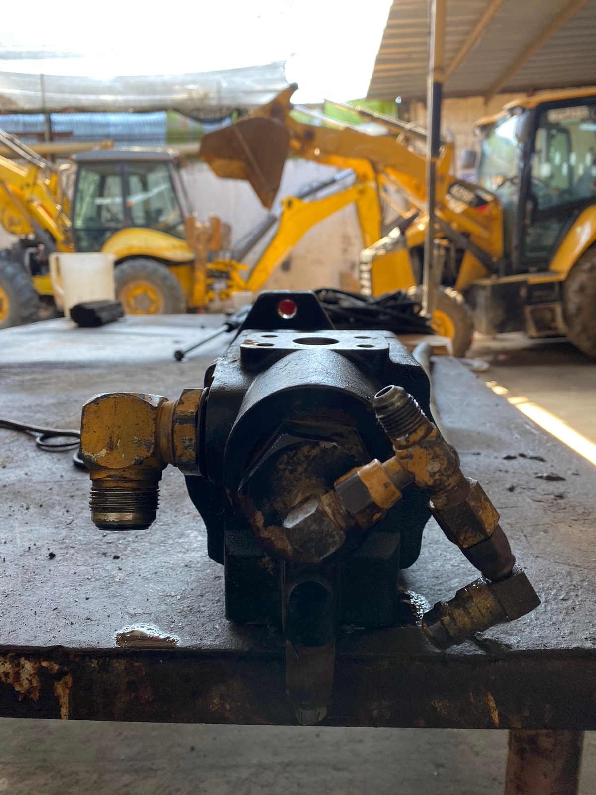
Soporte industrial
En Motores Baks S.A.S. desarrollamos soluciones para sistemas eléctricos industriales, incluyendo levantamiento técnico, diseño de planos eléctricos, ingeniería de redes internas y externas, y estructuración de sistemas de distribución y control. Ofrecemos integración de sistemas de respaldo como UPS y plantas eléctricas, proyectos de iluminación eficiente, canalización, cableado estructurado y adecuación de instalaciones eléctricas, garantizando seguridad, funcionalidad y continuidad operativa en cada proyecto.
Revisiones, ajustes, lubricación, calibración y cambio programado de piezas para anticipar fallas.
Planeación y controlDiagnóstico rápido y preciso para corregir fallas y devolver la productividad al equipo.
Respuesta oportunaTermografía, calidad de energía y medición de parámetros para detectar anomalías a tiempo.
Diagnóstico avanzadoReparación parcial y completa de motores gasolina y diésel de múltiples marcas.
Perkins · Deutz · CumminsReparación de cajas automáticas, servo-transmisiones y sistemas de potencia.
Pruebas y calibraciónFabricación y reparación de cilindros, bombas, suspensiones y direcciones hidráulicas.
Diseño a la medidaMecanizados, bancos, estructuras y proyectos desarrollados según cada necesidad.
Ingeniería aplicadaPlanos, redes, UPS, plantas eléctricas, iluminación y adecuación de instalaciones.
RETIE · RETILAP · NTC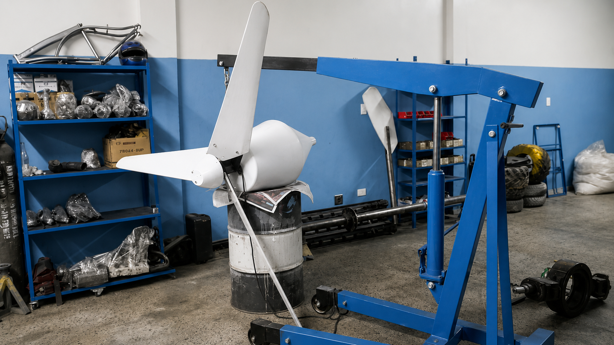
Proyecto destacado
Motores Baks S.A.S. ha participado en proyectos que han sido fundamentales para el desarrollo del país en apoyo a nuestra fuerza colombiana. Desarrollamos una innovadora turbina eólica para la primera base colombiana en la Antártida, ayudando en la participación de la disminución de la huella de carbono.
Suministro especializado
Trabajamos con proveedores certificados y aliados estratégicos para garantizar calidad, disponibilidad y confianza.
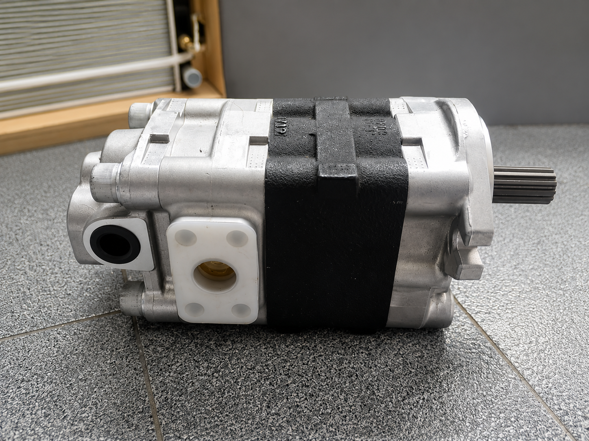
Hablemos de su equipo
Cuéntenos qué necesita. Nuestro equipo técnico le ayudará a definir el siguiente paso.